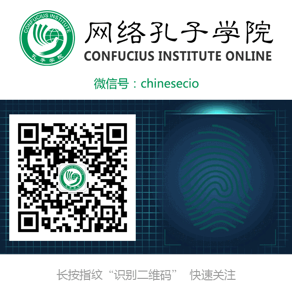

汉语与《牛津英语词典》的不解之缘
 120
120
感谢您关注网络孔子学院官方微信公众号！如果您尚未关注，欢迎点击文章下方的二维码关注我们。
“Tuhao 土豪”有望携手“Dama大妈”以单词形式收录进《牛津英语词典》，这则消息引起了广泛的讨论和关注。据相关数据统计，目前《牛津英语词典》中有二百余个 包含中文渊源的词汇。事实上，在日常生活中，许多汉语借词已经在英语词汇系统中占据了一席之地，成为其不可或缺的组成部分。
种类繁多的汉语借词
“ganbu（干 部）、guanxi（关系）等词多年以前就正式进入了《牛津英语词典》；tofu（豆腐）、Peking duck（北京烤鸭）、chow mein（炒面）已进入了外国人的日常生活用语；cheng-guan（城管）、dia（嗲） 等词也在英语中产生了一定影响。”南开大学汉语言文化学院的冉启斌副教授介绍说。
实际上，英语中各类汉语借词不断涌现。代表中国历史文化的词语，如：Confucius（孔子）、Laozi（老子）、Tao（道/道教）、Tao Te Ching（《道德经》）、feng shui（风水）、Mandarin（官话）……这些词语已经进入到英语的日常词汇中。文体娱乐方面：“kongfu（功夫）、Tai Chi（太极）”等词更是随着中国功夫电影的传播而广为人知。政治经济方面：“lianghui（两会）”一词，是由美国有线电视新闻网（CNN）最早带 头使用，渐渐地，这个词逐渐成为了各大国际媒体的通用词汇；我国的货币单位jiao（角）和yuan（元）也已被收入英语词典，有趣的是, yuan这个词在英语中又经历了词义范围扩大的过程，现在，yuan还可以用来泛指钱（money）。
汉语词语的“英化”过程
其实，汉语词语进入英语词汇系统，或多或少地都需要经过一定的“英化”改造。改造方式有音译、意译、音意合译和音译加词缀。例如，汉语拼音“太空” （taikong）和希腊词“nautēs”（航行者）组成英语单词taikonaut（太空人），主要用来指中国航天员，现已收录牛津词典中。而最先由 海外华人创造的中式英语“long time no see”（好久不见），采用了直译的方式，如今这个词已经成了英美国家里不少人打招呼的常用语。
同时，汉语词汇进入权威英语词典也需要经过一定的审核。“所有词语被收录于词典之中时，都要考虑它的通用程度和使用频率。”牛津大学出版社双语词典项目经理 朱莉·克里曼在接受采访时表示，将外来词加入词典的时候，通常要考虑多种因素。“形象化地说，就是要看母语为英语的人能否十分自然地去使用这些词汇，‘外 来语’的感觉是否在逐渐弱化。如果一个词被媒体广泛使用，而不仅仅是出现在某篇报道之中，我们肯定会考虑收录它。另外，将汉语词汇纳入英语词典时，还需要 考虑这些词语的直观程度，像‘guanxi（关系）’、‘hukou（户口）’这样的词语在我们看来就挺直观的。”
如今，越来越多的汉语流行词汇有望被收录在英语词典之中。像maotai（茅台）、Peking opera（京剧）……这些词语在母语为汉语的群体中有着相当的影响力，那么，它们“出口”后，在英语中也能有那么大的影响力吗？这还有待进一步的观察。
汉语成英语新词最大来源
总部设在美国得克萨斯州的“全球语言监督机构” 发布报告称，自1994年以来加入英语的新词汇中，“中文借用词”数量独占鳌头，以5%－20%的比例超过任何其他语言来源。该机构主席帕亚克表示:“令 人惊讶的是，由于中国经济增长的影响，中文对国际英语的冲击比英语国家还大。”
华中师范大学语言与语言教育研究中心姚双云教授认为，产生这一现象主要有3个原因。第一，英语开放度高，包容性强，借词庞杂；第二，科学技术的迅猛发展和文 化交流的日益频繁，必然推动各种语言间的词语借用；第三，汉语国际地位日益提高，对英语的影响力日益增强，这也是最重要的一点。归根到底，汉语词汇的大量 “出口”，其深层原因是中国在全球影响力的提升和关注度的提高。
中山大学周海中教授认为，以汉语为来源的英语词语是汉英两种语言接触的必然产物，也是中西文化融合的必然结果；随着中华民族与英语民族的交流交往日益频繁，来自汉语的英语词语及表达方式必然会越来越多。
目前，国内的汉语言学界对于来自英语或其他语言的借词研究颇多，而对于汉语词汇的输出现象研究较少。近年来，国人中文母语意识的提升，席卷全球的“汉语热”，网络上来自中国的各种新闻热点，都在提醒着我们，应该开始更多地关注和探讨汉语词汇输出这个文化现象了。
附：已录入英语词典的部分汉语借词
Guanxi 关系
Taikonaut 中国宇航员
Goji 枸杞
jiaozi 饺子
Shaolin 少林寺
Qigong 气功
wushu 武术
potsticker 锅贴，煎饺
Wing Chun 咏春拳
kung fu/ kong fu 功夫
Shanghainese 上海（人）的
Pinyin 拼音
Maotai 茅台
Renminbi 人民币
Heongsam 旗袍
Chinglish 中国式英语
yuan hsiao 元宵
pekin duck 北京烤鸭
yangko 秧歌
putonghua 普通话
dimsum 点心
pao-tzu 包子
Maotai 茅台酒
Ganbei 干杯
tsu 字
Wen-yen 文言
wonton 馄饨
pai-hua 白话文
